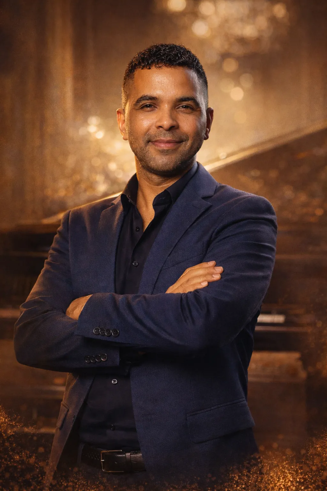

Fundador e diretor acadêmico
Jonatan Vale
Músico, professor, maestro, produtor musical, arranjador, compositor, escritor e educador. Fundador do Instituto Musical Vale e da Vale Produções, dirige a metodologia e a integração entre fundamentos, prática de estúdio e desenvolvimento profissional.
- Produção musical
- Educação musical
- Direção artística
- Arranjo e composição